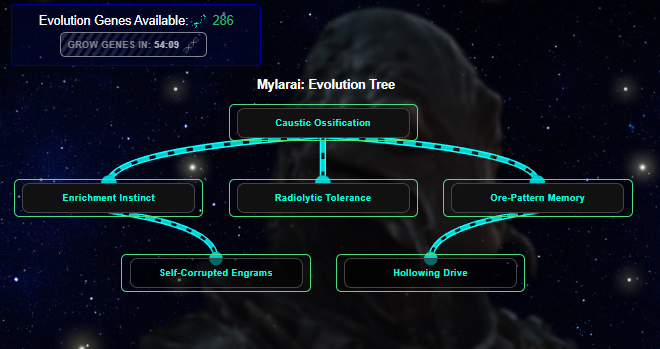
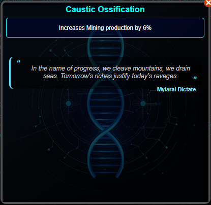

Evolution Tab

This tab includes actions related to Evolution Genes.
Grow Genes

This button grants Genes, which you can use for Evolutions, artifacts, and abilities.
More Information
Complete Evolution

Evolutions are upgrades to your current race. They only apply while you are that race, but they persist if you switch to another race and then switch back.
More Information